01 — Bois
Boiseries & trim
Cadres de portes, plinthes hautes, rampes, lambris, moulures couronnées. Nettoyage, ponçage maîtrisé, deux couches en satin ou demi-lustré selon le bois.
Bétonel Aura Satin · Benjamin Moore Advance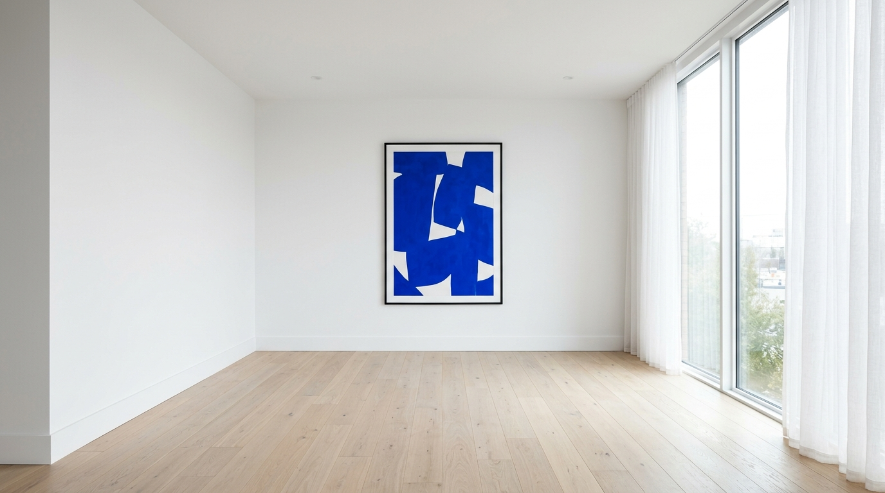
Sainte-Thérèse · Couleur & finis
Sainte-Thérèse compte parmi les plus beaux quartiers résidentiels matures du Nord de Montréal. Repeindre ces maisons demande de l'expertise sur la couleur, sur les finis et sur des surfaces qui ne datent pas d'hier. C'est notre spécialité.
Notre méthode
Les maisons de Sainte-Thérèse ont du caractère et chacune réagit différemment. Plâtre qui respire, bois qui bouge, moulures qui cachent un siècle de couches — avant de toucher au pinceau, on prend le temps de comprendre la surface qu'on a devant nous.
Visite à domicile, choix de couleurs sur place avec les nuanciers, devis pièce par pièce. C'est la seule façon de livrer un fini qui tiendra dix, vingt ans — comme la maison.
Quatre spécialités
01 — Bois
Cadres de portes, plinthes hautes, rampes, lambris, moulures couronnées. Nettoyage, ponçage maîtrisé, deux couches en satin ou demi-lustré selon le bois.
Bétonel Aura Satin · Benjamin Moore Advance02 — Plâtre
Murs et plafonds en plâtre ancien ou gypse récent. Apprêts respirants, enduit compatible pour les fissures de tassement, peinture mate ou veloutée selon la pièce.
Sherwin-Williams Harmony · BM Aura03 — Plafonds
Médaillons de plâtre, corniches, moulures de plafond. Pinceau fin sur les détails sculptés pour ne pas combler les profondeurs. Reprises à la lumière du matin.
Mat profond · faible reflet04 — Couleur
On amène les nuanciers chez vous, on teste à la lumière du matin et de fin d'après-midi. Couleurs modernes, neutres chauds ou teintes plus marquées — on adapte à votre maison.
BM Color Stories · Farrow & Ball équivalentsRéalisations
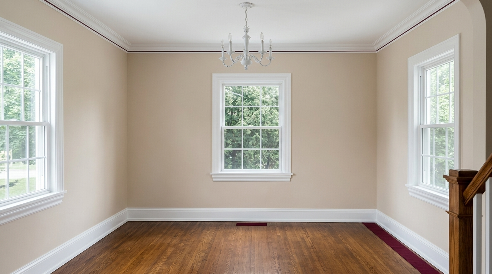
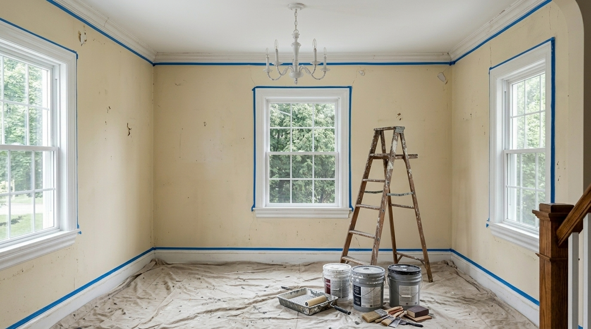
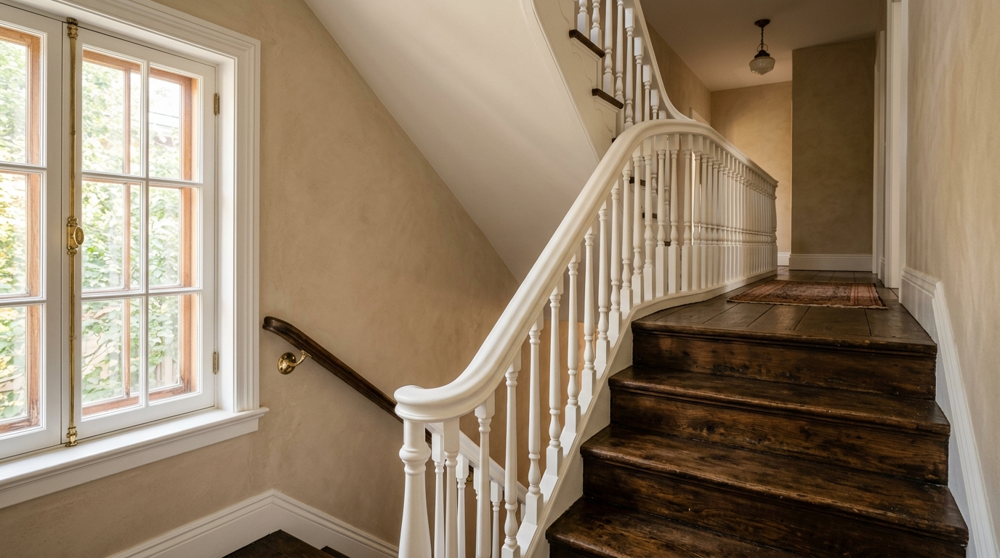
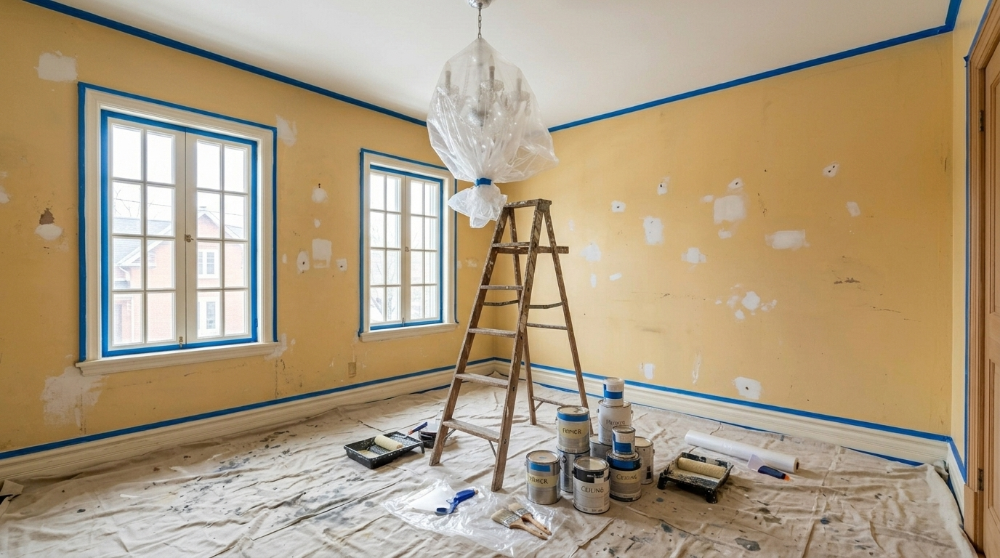
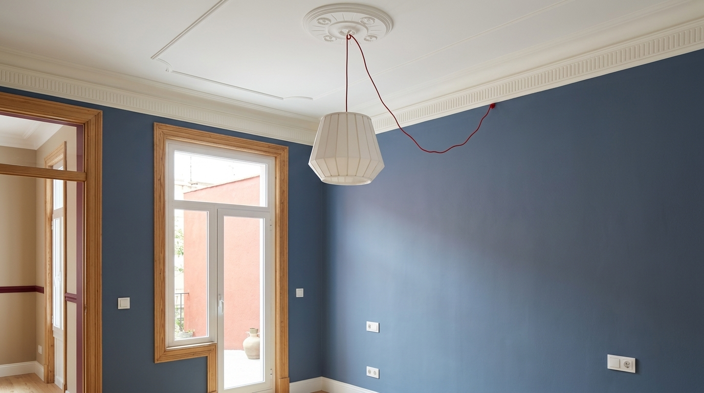
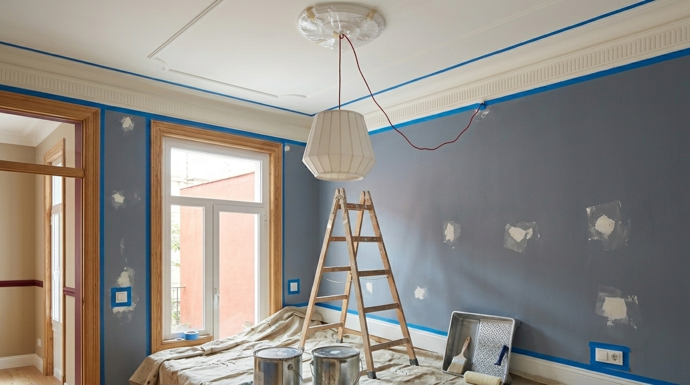
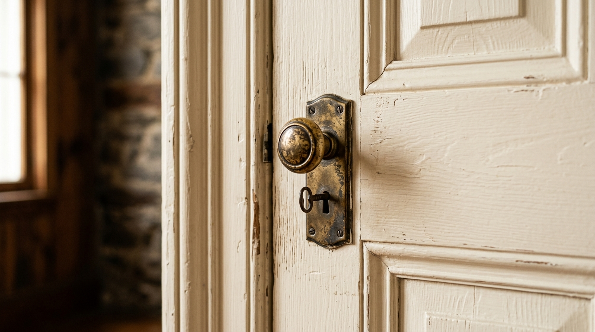
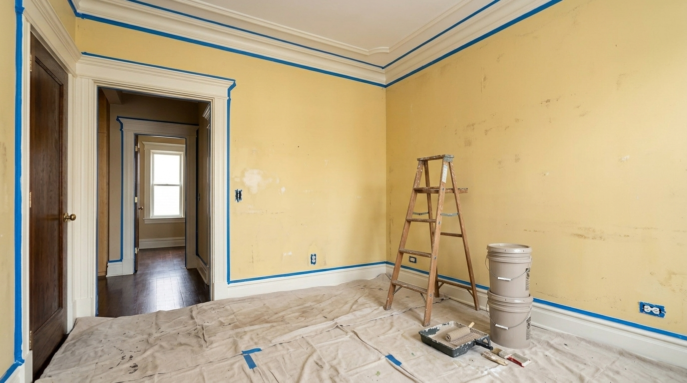
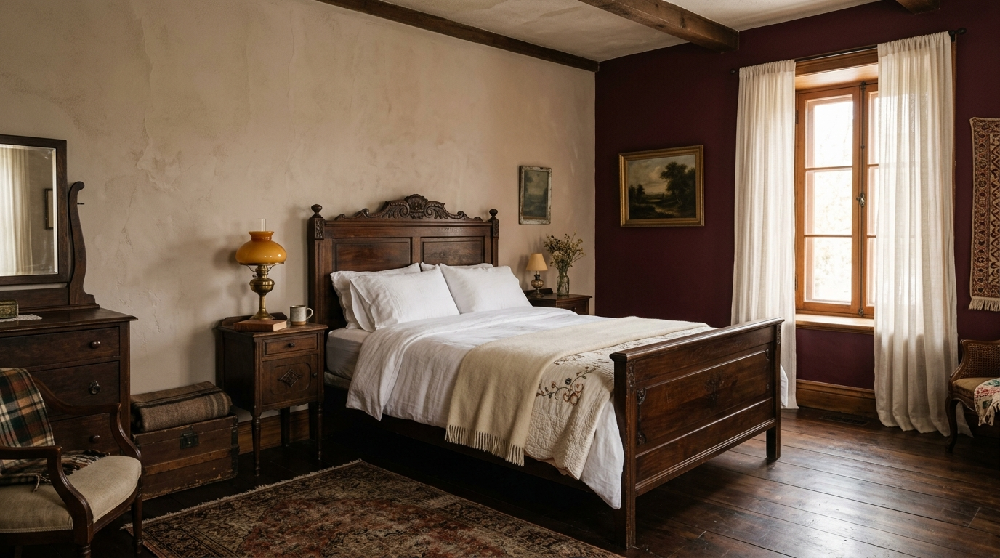
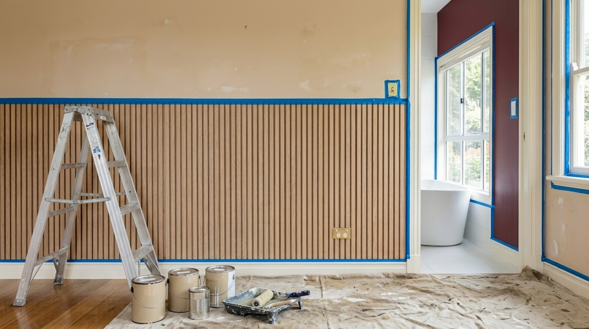
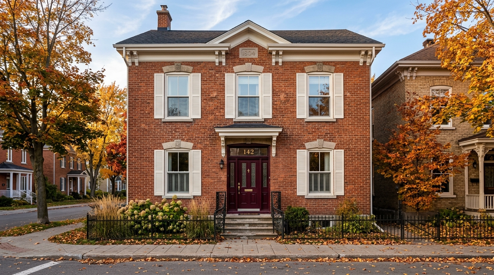
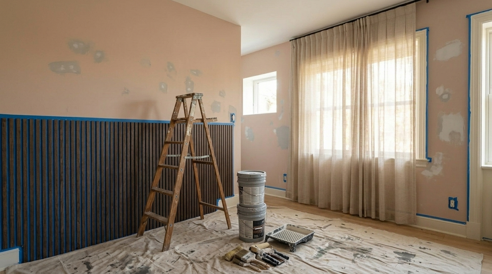
Notre process
On vient à votre maison sans rendez-vous serré. On regarde les boiseries, on touche le plâtre, on note ce qui demande attention.
On chiffre chaque pièce, chaque type de surface, chaque couleur. Pas de forfait flou — chaque ligne est expliquée.
On amène les nuanciers chez vous. Tests à la lumière du matin et de fin d'après-midi. Aucune précipitation sur le choix final.
Lessivage, ponçage des boiseries, calfeutrage des fissures du plâtre, apprêt adapté. C'est ici qu'on passe le plus de temps.
Plafonds d'abord, murs ensuite, boiseries en dernier. Au pinceau pour les détails fins, au rouleau pour les surfaces planes.
On marche le chantier avec vous à la lumière du jour. Toute reprise est faite avant de remballer. Garantie écrite à la signature.
Zones desservies
Le cœur de notre travail est dans les secteurs établis de Sainte-Thérèse — surtout le Vieux-Sainte-Thérèse. On travaille aussi les nouveaux développements et les villes voisines.
Témoignages
Notre maison a 92 ans. Les boiseries n'avaient pas été touchées proprement depuis vingt ans. Ils ont retrouvé le détail sous trois couches de peinture. C'est rare, ce genre d'attention.
Famille Lapointe · Vieux-Sainte-Thérèse
Le plâtre du salon faisait des fissures fines partout. Ils ont rebouché, apprêté, peint, et aucune fissure n'est revenue deux ans plus tard. On ne les a pas trouvés sur Internet — c'est notre voisine qui nous les a recommandés.
Hélène · Boulevard du Curé-Labelle
On hésitait sur la couleur du salon. Ils sont venus avec dix échantillons, on a testé pendant deux jours à différentes heures, et on a trouvé le bon ton du premier coup sur le mur. Worth it.
Pierre-Luc · Centre-ville
Questions fréquentes
Oui — c'est notre spécialité. On nettoie en douceur, on rebouche les fendillements, on ponce sans masquer les détails, et on applique un fini qui révèle plutôt qu'il ne cache. Le bois reste vivant.
Oui. On utilise des apprêts et peintures respirants à base d'eau, on rebouche avec un enduit compatible, et on évite les peintures trop occlusives qui peuvent se décoller dans deux ou trois ans.
Oui — qu'il s'agisse d'un blanc de lait, d'un beige patiné, d'un bordeaux victorien ou d'un vert d'eau d'avant-guerre. On travaille avec les nuanciers Historical Collection et on peut faire reproduire toute teinte d'un échantillon que vous nous remettez.
Une pièce complète avec moulures, plinthes, cadres et portes prend de 2 à 4 jours. Une maison entière, environ 7 à 10 jours. On ne presse pas — c'est ce qui fait la différence.
Oui. On peint au pinceau fin sur les détails sculptés pour ne jamais combler la profondeur. C'est un travail méticuleux, mais c'est ce qui donne au plafond son cachet une fois terminé.
On arrête, on vous informe, on procède selon les règles de décontamination en vigueur au Québec. La sécurité passe avant tout, et on ne ponce jamais à sec sur une couche suspecte.
Oui — garantie écrite de deux ans sur l'application. Pour les restaurations majeures, on revient une fois la première année pour vérifier que tout tient comme prévu.
Demander une visite
Décrivez-nous votre maison en quelques lignes. On vous rappelle pour fixer une visite — on aime voir l'état réel des boiseries et du plâtre avant de chiffrer quoi que ce soit.